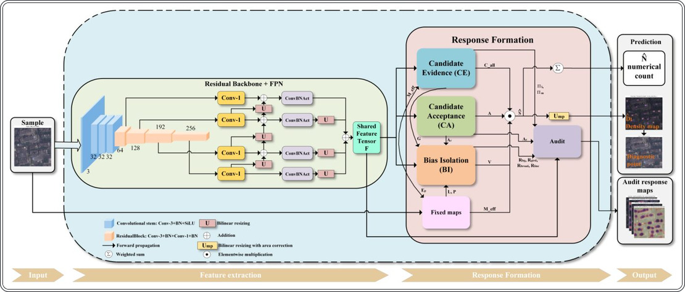
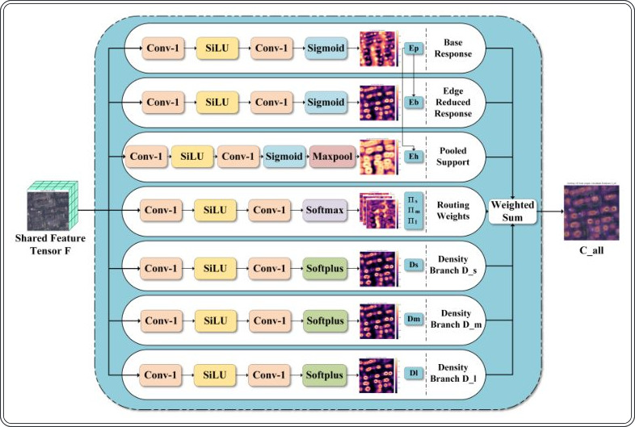
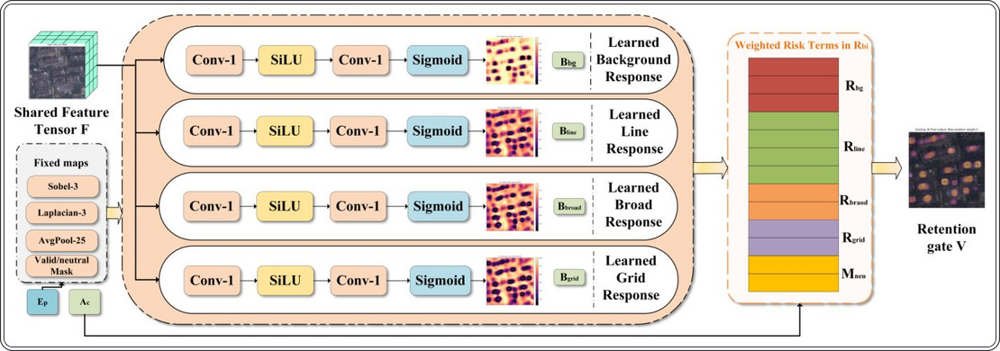
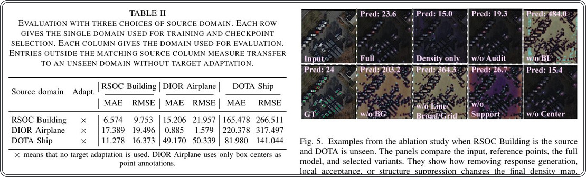
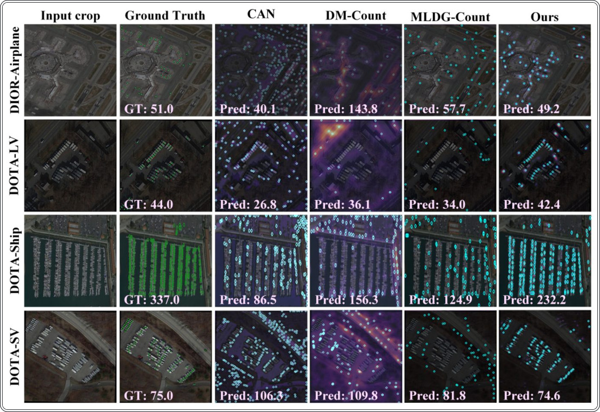
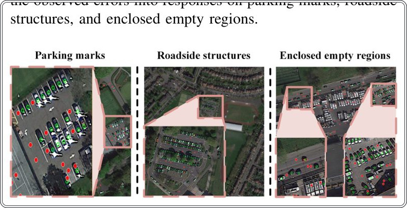

Считаем объекты на спутниковых снимках без дообучения нейросетей


Авторы метода COBICount решили проблему «кандидатной неоднозначности», когда нейросеть путает объекты с элементами ландшафта. Модель обучается на одном источнике и успешно переносится на новые типы данных без участия человека. Это позволяет считать объекты на картах, даже если условия съемки или типы объектов сильно отличаются от обучающей выборки.
Главное
- COBICount разделяет генерацию ответов, их проверку и подавление фоновых шумов.
- Модель обучается на одном источнике и работает на новых данных без дообучения.
- Средняя абсолютная ошибка (MAE) на целевых доменах DOTA составила 174,132.
Подробнее
В основе метода лежит разделение процесса обработки на три этапа: генерация кандидатов (CE), их проверка на компактность (CA) и подавление ложных срабатываний (BI). Традиционные модели часто принимают края дорог или крыш за искомые объекты, что искажает статистику. COBICount использует архитектуру, которая изолирует повторяющиеся фоновые структуры, не требуя разметки для целевых доменов.
Система была протестирована на наборе данных RSOC (здания) и успешно применена к объектам из DOTA (транспорт и корабли). При использовании 5,07 млн параметров и 17,41 млрд операций с плавающей запятой для снимка 512x512, модель показала среднюю абсолютную ошибку (MAE) 174,132. Метод доказывает, что можно достичь высокой точности подсчета, опираясь только на исходную разметку без адаптации к новым условиям.
Ограничения
Метод требует наличия качественной исходной разметки и может быть менее эффективен при экстремальных изменениях масштаба объектов.
Подробный разбор статьи
Резюме
Подсчет объектов на снимках дистанционного зондирования Земли (ДЗЗ) — это задача определения количества зданий, транспортных средств или морских судов на аэрофотоснимках и спутниковых изображениях. Большинство современных методов с учителем строят карту плотности, где сумма значений пикселей соответствует общему числу объектов. Однако такие модели часто предполагают идентичность категорий, размеров и фоновых условий, что затрудняет их перенос на другие регионы или типы сенсоров без дополнительного обучения на целевых данных.
Важно
Авторы предлагают метод COBICount для подсчета объектов без доступа к целевым данным (source-only), который минимизирует ложные срабатывания на фоновых структурах.
В задаче обучения «только на исходных данных» (source-only) модель обучается на наборе изображений с единой категорией объектов и схожими условиями съемки, где каждый объект отмечен одной точкой. Целевые изображения при этом недоступны до момента фиксации модели. Основная проблема заключается в том, что модель может ошибочно принимать за объекты повторяющиеся элементы фона: края дорог, границы крыш, парковочные разметки или береговые линии. Метод COBICount разделяет процесс на три этапа: генерация кандидатов (Candidate Evidence, CE), их подтверждение (Candidate Acceptance, CA) и подавление фона (Bias Isolation, BI). BI изолирует отклики, связанные с повторяющимися структурами, а CA оставляет только компактные отклики, центрированные на реальных объектах.
Пояснение
Метод «source-only» означает, что модель обучается на одном наборе данных и должна работать на другом без дообучения на целевых примерах.
Модель была обучена на датасете RSOC (здания) и протестирована на данных DOTA (крупные и мелкие транспортные средства, суда). COBICount продемонстрировал наименьшую среднюю абсолютную ошибку (MAE) среди аналогов, составившую 174.132. Модель использует 5.07 млн параметров и требует 17.41 млрд операций с плавающей запятой (FLOPs) для обработки изображения размером 512 × 512 пикселей.
Осторожно
Эффективность метода ограничена тем, что модель обучается на специфических условиях съемки, и при радикальной смене домена точность может снижаться.
В данной работе исследуется задача подсчета объектов на снимках дистанционного зондирования Земли (ДЗЗ) в условиях «source-only counting». В отличие от методов обучения с подкреплением или адаптации доменов, требующих размеченных данных целевой области, данный подход использует только один размеченный исходный домен (например, RSOC Building) для обучения модели, которая затем применяется к новым, не виденным ранее доменам (например, DOTA Large Vehicle, Small Vehicle, Ship или DIOR Airplane). Модель обучается исключительно на точечных аннотациях центров объектов без использования целевых изображений, меток или статистических параметров целевых доменов на этапе обучения.
Важно
Метод source-only counting позволяет развертывать модели на новых регионах и сенсорах без необходимости сбора и разметки данных для каждой новой области, что критически важно для оперативного анализа.
Основная проблема такого подхода — «неопределенность происхождения кандидата» (candidate origin ambiguity). Модель может ошибочно принимать за объекты элементы фона (границы крыш, дорожные разметки, портовые структуры), которые визуально схожи с паттернами, изученными на исходных данных. Кроме того, разница в пространственном масштабе (например, здание на исходном снимке занимает большую площадь, чем автомобиль на целевом) приводит к тому, что отклики модели на реальные объекты могут быть слабее, чем на фоновые структуры. Стандартные метрики MAE и RMSE не позволяют выявить эти ошибки, так как они лишь суммируют итоговый счет, где пропуски объектов и ложные срабатывания на фоне могут взаимно компенсироваться.
Пояснение
Неопределенность происхождения кандидата — это ситуация, когда модель выдает высокий отклик, но невозможно понять, соответствует ли он реальному объекту или случайному геометрическому паттерну фона.
Для решения этих проблем предложен метод COBICount, состоящий из трех компонентов: Candidate Evidence (CE) генерирует широкую карту возможных откликов, Candidate Acceptance (CA) фильтрует их на основе соответствия компактным паттернам исходных аннотаций, а Bias Isolation (BI) подавляет отклики, связанные с фоновыми структурами и сетками. Дополнительный модуль Audit, обученный только на исходных данных, используется для проверки паттернов отклика без влияния на итоговую плотность. COBICount демонстрирует наименьший средний MAE на целевых доменах DOTA при обучении на RSOC Building, превосходя существующие аналоги.
Исследование опирается на три ключевых аспекта: методы подсчета объектов по точечным аннотациям, требования к данным при смене доменов и способы верификации локализации откликов модели относительно реальных объектов.
Подсчет объектов на спутниковых снимках традиционно выполняется либо через их обнаружение (детектирование), либо через точечную разметку. Традиционные методы, такие как DOTA, xView, DIOR и FAIR1M, опираются на аннотации в виде ограничивающих рамок (bounding boxes). Хотя рамки точно определяют положение и размер объекта, их создание требует огромных трудозатрат, особенно при наличии множества мелких целей. Кроме того, методы детектирования часто ошибаются из-за пропусков или дублирования объектов.
Пояснение
Точечная разметка (point supervision) — это метод обучения нейросетей, при котором вместо отрисовки рамок вокруг объекта достаточно поставить одну точку в его центре, что значительно ускоряет подготовку датасетов.
Альтернативный подход — точечная разметка — минимизирует усилия по аннотированию. В этом случае точки преобразуются в карту плотности, которую сеть учится предсказывать, а итоговое количество объектов вычисляется путем суммирования значений этой карты. Ранние модели, такие как MCNN, использовали параллельные сверточные слои для адаптации к разным размерам объектов, в то время как CSRNet применяла расширенные свертки для увеличения поля зрения. Более современные подходы, такие как Bayesian Loss или методы сопоставления распределений, позволяют учитывать неопределенность разметки, а трансформеры (например, TransCrowd) связывают удаленные участки изображения.
Объекты на снимках из космоса сильно варьируются по размеру, а фон часто перегружен повторяющимися элементами: дорогами, крышами и разметкой парковок. Специализированные наборы данных, такие как RSOC, содержат разметку для зданий, судов и транспорта. Архитектуры вроде PSGCNet используют пирамидальные масштабы для анализа сцены, а TASNet применяет механизмы тройного внимания для выделения полезных признаков. BDRNet дополняет регрессию плотности вспомогательным выходом, который предсказывает области, занятые объектами, а EdgeCount использует дистилляцию знаний для облегчения нейросетей без потери точности.
Важно
Существующие методы показывают высокую точность при совпадении условий обучения и тестирования, однако они не гарантируют устойчивость модели при смене сенсора, разрешения или типа ландшафта.
Осторожно
Низкая ошибка подсчета не всегда означает, что модель «видит» объекты: часто высокие значения плотности ошибочно приписываются повторяющимся текстурам фона, а не реальным целям.
Методы адаптации доменов (domain adaptation) позволяют модели использовать изображения из целевой области в процессе обучения, с разметкой или без неё. Состязательное обучение (adversarial training) помогает модели выделять признаки, которые делают исходные и целевые данные неразличимыми. В дистанционном зондировании такие подходы применяются для компенсации различий в сенсорах, регионах и условиях съемки, включая сегментацию изображений без учителя. Однако адаптация требует наличия целевых данных до начала работы и часто нуждается в переобучении для каждой новой области.
Пояснение
Адаптация доменов — это процесс настройки модели, обученной на одних данных (исходный домен), для работы на других (целевой домен), где условия съемки могут отличаться.
Обобщение доменов (domain generalization) исключает использование целевых изображений при обучении. Методы, такие как MLDG, имитируют смену доменов, разделяя доступные данные на временные обучающие и тестовые наборы. Другие подходы, например, «хирургия градиентов», минимизируют конфликты обновлений между разными источниками. В задачах подсчета объектов существуют методы, разделяющие общую информацию и специфические признаки групп, а также подходы, использующие один размеченный домен (например, MPCount), которые обучают модель сохранять устойчивость при трансформации исходных изображений.
Важно
Обобщение доменов позволяет модели работать с новыми данными без предварительного сбора целевых выборок, однако требует наличия нескольких размеченных исходных доменов.
Предобученные модели, такие как CLIP (связывающая изображения с текстом) или Segment Anything Model (SAM), позволяют сократить объем необходимой разметки. В сфере дистанционного зондирования применяются специализированные методы: SatMAE и SatMAE++ восстанавливают скрытые части изображений, учитывая временные и спектральные характеристики, а также масштаб. Модели RemoteCLIP и GeoRSCLIP адаптируют связь «изображение-текст» для аэрокосмических данных. Несмотря на эффективность, такие модели предоставляют лишь признаки или маски объектов, но не решают задачу прямого подсчета, так как маска не всегда позволяет отделить один объект от группы или фона.
Осторожно
Предобученные модели не заменяют необходимость точной локализации объектов, так как они не всегда способны корректно интерпретировать плотные скопления или фоновые шумы как отдельные единицы.
Модуль CA выполняет фильтрацию откликов модели, чтобы определить, какая часть каждого обнаруженного сигнала попадет на итоговую карту плотности. Система предсказывает четыре карты: A_c (центр), A_o (область), A_q (качество) и A_r (надежность). Итоговая маска A формируется как произведение этих карт: A = Ac \odot Ao \odot (0.35 + 0.65Aq) \odot (0.35 + 0.65Ar). Карты A_c и A_o обучаются на основе близости к целевой точке, при этом A_o охватывает более широкую область. Карты A_q и A_r используют аналогичные цели с разными весами потерь. CA не использует жесткие правила формы или поиск связанных компонентов, а обучается пространственным «воротам» на основе супервизии по точкам.
Важно
CA ограничивает отклики, заставляя их концентрироваться вокруг истинных меток объектов, подавляя шум вне целевых зон.
BI отвечает за подавление ложных срабатываний, вызванных повторяющимися паттернами (дороги, сетки парковок), которые не являются целевыми объектами. Модуль оценивает четыре карты риска: Bbg (фон), Bline (линии), Bbroad (широкие структуры) и Bgrid (сетки). Эти карты обучаются через градиенты функции потерь плотности и подавления, а не через классификацию объектов. BI также использует фиксированные преобразования: оператор Собеля G и лапласиан Klap = [-4] для выявления резких изменений интенсивности, а также усредняющее пулинг-окно 25 × 25 для поиска широких областей. Риск рассчитывается как взвешенная сумма Rbi, где итоговый порог удержания V = clip(1 - Rbi, 0, 1).
Пояснение
Оператор Собеля и лапласиан — это математические методы выделения границ и резких перепадов яркости, позволяющие модели «видеть» контуры объектов.
Аудит — это вспомогательный блок для визуального контроля, который не влияет на основные вычисления. Он преобразует внутренние признаки в четыре канала: транспорт, здания, суда и фон. Эти каналы не являются классификаторами, а служат для интерпретации того, на какие структуры реагирует сеть. Результаты нормализуются через Softmax, но их значения не следует интерпретировать как вероятности принадлежности к классам.
Для обучения используется набор точек Ps = \pi\i=1N^. Поскольку выходная сетка имеет шаг \rho = 4, координаты точек масштабируются. Целевая плотность D^(u) строится путем размещения нормализованных гауссовых ядер κ_σ с шириной σ_p = 1.15 в каждой точке. Окно ядра ограничено радиусом r_\sigma = \max(1, extround(3\sigma)).
Осторожно
Обучение полностью опирается на точечные аннотации, поэтому точность модели напрямую зависит от качества разметки центров объектов.
Для обучения модели используются целевые плотности D^* и карты Tσ, основанные на аннотациях исходных изображений. В отличие от выходных данных нейросети, эти карты не нормализуются повторно при обрезке границами изображения. Для центров объектов (Tpeak) и областей поддержки (Tsup) применяются Гауссианы с максимальным значением 1. Используются маски: Mpt (центры), Msup (область поддержки), Mfg (защитная зона, созданная дилатацией 9×9) и Mbg (фон).
Важно
Целевые карты Tpeak и Tsup с параметром σ_s=2.35 позволяют модели четко разграничить центры объектов и зоны их влияния.
Функция потерь плотности Lden использует сглаженную L₁-норму, нормализованную по количеству объектов Nnorm = \max(N^*, 1), чтобы избежать доминирования изображений с высокой плотностью. Дополнительно применяются относительные (Lrel cnt) и логарифмические (Llog cnt) штрафы за ошибку в общем подсчете объектов, что сглаживает влияние больших численных диапазонов.
Компоненты CA (Center Awareness) обучаются через бинарную кросс-энтропию (LBCE) с пространственными весами ω_c, ω_o, ω_s, которые фокусируют внимание модели на областях объектов. BI (Background Intelligence) обучается через четыре штрафа (Lbgv, Lline, Lbroad, Lgrid), блокируя градиенты через оператор stop gradient (sg). Для подавления «ложных срабатываний» (hard negatives) вводится штраф Lhn, наказывающий модель за высокие отклики в зонах, помеченных как фон.
Пояснение
Оператор
stop gradient(sg) фиксирует значение карты, не позволяя градиенту изменять её веса в процессе обратного распространения ошибки.
Для балансировки ветвей сети используются энтропийный штраф Lent и штраф баланса Lbal, предотвращающие концентрацию весов на одной ветви. Начиная с 10-й эпохи, активируется аудит (Laud) для уточнения каналов зданий и фона. Итоговая функция потерь L представляет собой взвешенную сумму всех перечисленных метрик с коэффициентом c_e, который линейно возрастает в первые 8 эпох.
На этапе инференса модель сначала вычисляет карту плотности b_S и число объектов \hatN. Затем применяется жадный алгоритм: из b_S последовательно извлекаются локальные максимумы, превышающие порог au = \max(0.020, 0.28 · \max(bS)). Принятые точки должны находиться на расстоянии не менее 3.2 ячеек сетки (около 12.8 пикселей) друг от друга, с ограничением общего количества точек Kpt ≤ 1024.
Эксперименты проводятся в режиме «только исходные данные» (source-only counting). Роли доменов (исходный/целевой) не являются фиксированными свойствами наборов RSOC, DOTA или DIOR, а назначаются для каждого теста отдельно. Исходный домен содержит одну категорию объектов при определенных условиях съемки и используется для обучения и выбора модели. Целевой домен — это категория или условия, которые остаются скрытыми до момента фиксации модели. В основном эксперименте в качестве источника выступает RSOC Building: обучающая выборка обновляет веса, а валидационная — определяет «чекпоинт» (состояние модели). Далее модель тестируется на трех независимых доменах: DOTA Large Vehicle (LV), DOTA Small Vehicle (SV) и DOTA Ship. В дополнительных тестах источником выступают DIOR Airplane или DOTA Ship.
Важно
Модель обучается исключительно на данных RSOC Building, после чего фиксируется и оценивается на трех независимых целевых доменах DOTA без дообучения.
Пояснение
Чекпоинт — это сохраненное состояние нейросети с лучшими показателями на валидационном наборе, которое используется для финального тестирования.
Для оценки объектов в DOTA используются ориентированные четырехугольники, а в DIOR — ограничивающие рамки. Для унификации алгоритм извлекает из них центральную точку, которая служит единственным ориентиром для подсчета. Размер, ориентация и границы объектов при обучении не учитываются.
Эффективность методов оценивается через среднюю абсолютную ошибку (MAE) и среднеквадратичную ошибку (RMSE). Для агрегированной оценки трех целевых доменов DOTA используется показатель MT-MAE (среднее арифметическое MAE для LV, SV и Ship). Входные изображения для всех методов масштабируются так, чтобы их длинная сторона не превышала 2000 пикселей. Это правило применяется единообразно до начала любых вычислений.
Осторожно
Использование фиксированного размера 2000 пикселей является жестким ограничением, которое может влиять на точность обнаружения очень мелких объектов.
В сравнении участвуют 13 архитектур, включая MCNN, CSRNet, P2PNet, TransCrowd и другие, охватывающие подходы от регрессии карт плотности до трансформеров. Все модели, включая специализированные для дистанционного зондирования (BDRNet) и базовые (MPCount), были переобучены в режиме «только исходные данные» на RSOC Building. Ни один метод не получает доступа к целевым данным для адаптации или выбора параметров.










Схема исследования
Препринт не проходил рецензирование. Выводы предварительные.
Источник
| Источник | Категория | Лицензия |
|---|---|---|
| arXiv | sat_imagery | arxiv |
Источники
| Источник | Ссылка |
|---|---|
| Страница препринта | arxiv.org |
| Полный текст (PDF) | arxiv.org |
| DOI | doi.org |
| Метаданные Crossref | api.crossref.org |
| Europe PMC | europepmc.org |